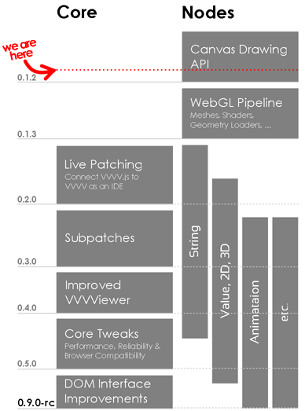

Many of you might wonder how this VVVV.js thing is going to evolve, and when it will be actually usable, if at all. So probably it's time to create a rough plan with some milestones, that have to be accomplished.
Of course, the roadmap below is not carved in stone at all. Rather, it's an overview of the things that have to be tackled, and of when this might happen.
As you can see, we're first heading for some visual bragging to find out, what's possible in terms of Canvas 2D and WebGL 3D graphics (In fact, the set of Canvas drawing nodes will be released this week).
After this, we will deal with ways to connect VVVV to the browser, to simplify the development process, and create the VVVV-typical patch-while-running experience. Simultaneiously, lots of the many utility nodes should be ported at this stage, beginning with String and Value nodes, to pave the way for some data visualization demos.
Other steps include handling subpatches, getting rid of VVVViewer glitches and of course performance optimization.
As you can see, there's a bunch of work to do, and we could really use some help. If you're interested in any particular component, get in touch with us!